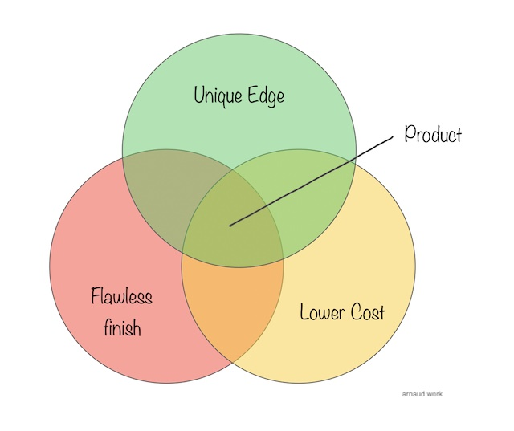

We've gone through the 'theory', it's time to dive into the practice.
Often, a question I faced was to define if something was 'productable'. In an established engineering environment, this comes up after a solution was built internally to address a problem that is believed to be shared by other people/companies. In a pre-inception setup, this question starts with a pet project or personal project that could become a solution to a common problem.
The market - as in, placing your project out there for people to buy - is always the final judge of whether said project is a product, but you don't have to just throw spaghetti at the wall.
A product - at least in a tech company - is a value generating element (physical object, software or solution) one customer will want to buy for its (relative) low cost, its unique edge and high quality finish.
The technology provides both the lower cost (often through unlimited scale) and the unique edge (through a different approach to the problem).
The execution of the product development brings a finish level that the end-user can't achieve themselves. This is build quality on the material sense, but also all the different experiences as you use the product.

Are you bringing a unique edge? This isn't about your positioning relative to you competition - although it won't hurt. This is about defining whether you are on track to create something people will not find (easily) elsewhere or that they can easily put together themselves. This can be in a unique way you approach the problem, a unique or difficult way to put together the solution or clearing a significant amount of the problem in a comprehensive way.
Are you bringing a lower cost to existing ways of solving the problem? This is often the biggest element in the thinking process. A known way of working always starts the evaluation/comparison process with a leading edge over an unknown way. The cost is the main force that can open up the conversation. Is your product, its deployment and ultimately end-result benefits a cheaper journey (at equal returns) than the existing approach?
Are you building something that feels finished above and beyond? Is this a professional feeling solution or a DIY project? Is your product clean and easily deployable? Is it finished, polished? Is it intuitive? Does it handle edge cases or crashes at every side step? No one will spend money on something that doesn't feel trustworthy. No one wants to spend money on something that requires more work before collecting the benefits.
Every customer goes through a "build or buy" moment when they look for a new product. In reality, it's more "Build, buy or change nothing". You want your product to bring so much value on the buy side - because you've solved so much of the problem - that it's a no-brainer to buy.
Let's take a few examples:
A drone or robot without smart batteries, may very well check 1/ and 2/ but won't check 3/. On the 2/ though, you are bringing a hidden operational cost to manage these batteries.
A product management tool that is hyper simplified, focused and beautiful may check 2/ and 3/ but won't check 1/ as people are most likely already familiar with either Excel, Google sheet or some other already deployed universal tool.
A payment system that uses a blockchain but requires to understand which chain to use, establish crypto wallet, store pass phrase may check 1/ and 3/ but may not check 2/ as it could bring a significant training and operational cost.
Disruption is in practice simpler than the myth the term tends to carry. To disrupt, your product needs to do either or both of these things in a disruptable market:
When you over-achieve on both, your disruption becomes a revolution - think smartphones and digital photography.
Digital photography is particularly interesting because the cost of a photo has basically dropped to zero as any digital camera can produce an infinite number of pictures. A complete revolution from the film era.
Disruptable markets are simply markets that have been in an extended period of time of high cost and/or low productivity while a new solution could be within reach with established technology.
Your ability to disrupt here lies in your internal capacity to incredibly execute on bringing up the right product.
For this next chapter, I'm going to use fictitious companies as case studies. Different industries, different markets, different sizes.
Robotics Inc is a VC-backed, Series-C startup developing rovers for industrial and public safety users. Their main product is remote controlled with advanced navigation and situation awareness capabilities. They offer multiple payloads that allow to adjust for any circumstances.
Trading LLC is a hedge fund style trading company that built a heavy tech stack to do most of their trading on stocks automatically. They don't sell their tech to anyone as it's their edge against the competition
Crypto Inc is a seed-stage startup that's building a social network on web3. Their main product allows people to find each other and exchange goods using fiat and crypto currencies.
Throughout the next pages, I'm going to use these examples to illustrate how I would go out at the challenges they face using my methodology and mindset.